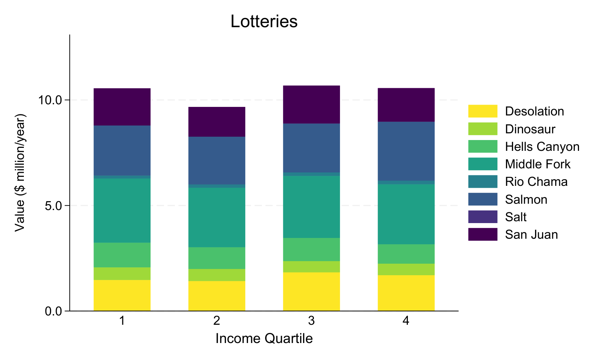
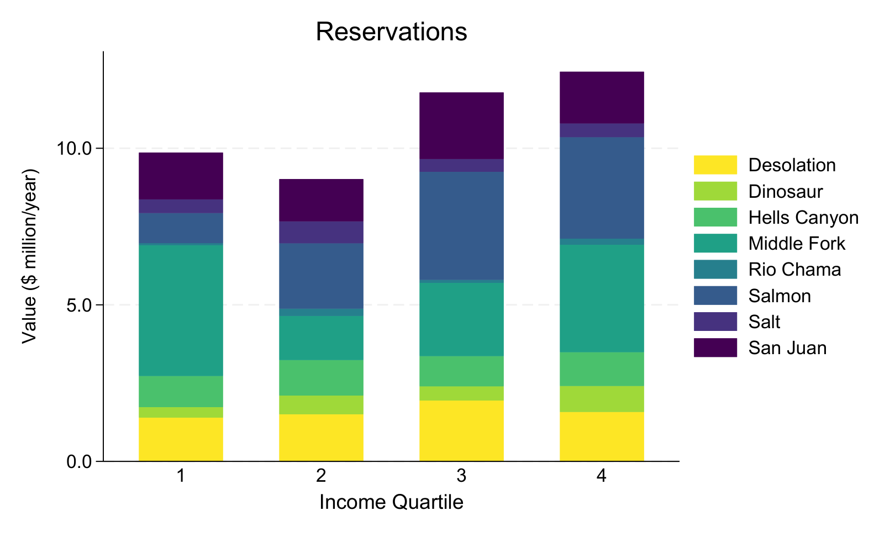

Policy Brief
Online Reservation Systems, Buying Frenzies, and Equitable Access
When low fees create excess demand, first-come, first-served online releases can become buying frenzies that undermine equitable access.
Main Takeaway
Low prices alone do not guarantee equitable access.
When permits are scarce, online reservation frenzies can reward speed, information, flexibility, and technology access. Lottery allocation provides a useful benchmark for comparing who wins.
Why Policymakers Should Care
Public land agencies often keep fees low to support broad access. But when demand exceeds supply, the mechanism used to allocate permits can determine who actually receives the benefit of low prices.
Key Findings
- Successful buyers in online reservation frenzies reside in wealthier zip codes than users selected at random through lotteries.
- The income difference increases as congestion and competition rise.
- High-income zip codes receive 25% more recreational trip value in the distribution of benefits studied.
- These effects can undermine agency efforts to provide equitable access through low fees.
Policy Implications
- Allocation rules should be evaluated alongside fee levels.
- Lotteries can reduce the advantage created by speed-based reservation releases.
- Hybrid systems may help agencies balance predictability, efficiency, and equity.
Design Questions
Speed-based allocation and random allocation can produce different income distributions.
Distributional effects grow as competition for scarce permits increases.
Low fees should be paired with allocation rules that support broad access.
More recreational trip value received by high-income zip codes.
Allocation mechanisms compared: reservation-system buying frenzies and lotteries.
Core lesson: allocation design matters when low prices create excess demand.
Distributional Evidence
Lottery and reservation systems distribute benefits differently.
Figures 3a and 3b compare annual trip value across income quartiles for the lottery and reservation allocation mechanisms.


Paper
Online Reservation Systems, Buying Frenzies and Equitable Access to Public Lands
Forthcoming at Land Economics.